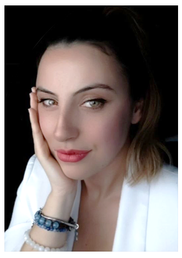

Ciao, sono Valeria, una Mental Coach appassionata di benessere emotivo e crescita personale. Ho conseguito il diploma di mental coach nel 2024 e, oltre alla formazione teorica, ho approfondito diverse competenze pratiche, completando ben 15 specializzazioni. Ma ciò che ha davvero arricchito il mio percorso è stata la mia esperienza sul campo: per quasi sei anni ho gestito uno sportello d’ascolto gratuito, dove ho avuto la fortuna di aiutare persone di ogni età e contesto a comprendere meglio se stesse, i loro bisogni e le loro emozioni. 
Mi occupo principalmente di comunicazione emotiva: aiuto le persone a esprimere i propri sentimenti, a riconoscere e superare le credenze limitanti che ostacolano il loro benessere, e a migliorare la gestione delle emozioni. Per me è fondamentale creare un approccio personalizzato e empatico per ciascun cliente, basato sull’ascolto attivo e sulla consapevolezza emotiva. Ogni persona è unica, e il mio obiettivo è aiutarla a riscoprire il proprio potenziale, a superare gli ostacoli e a trovare maggiore realizzazione personale e serenità.
Credo che la comunicazione sia la chiave per comprendere meglio se stessi e gli altri, e che ognuno di noi abbia dentro di sé le risorse per evolversi. Il mio lavoro è quello di accompagnarti in questo percorso, offrendo gli strumenti per sviluppare una maggiore consapevolezza e affrontare le sfide quotidiane con equilibrio e serenità.
Ogni percorso è completamente personalizzato, in modo da adattarsi alle tue esigenze e ai tuoi obiettivi. Inizia il tuo percorso di cambiamento oggi stesso, con una sessione conoscitiva gratuita per capire come posso supportarti nel raggiungere una vita più equilibrata e soddisfacente.